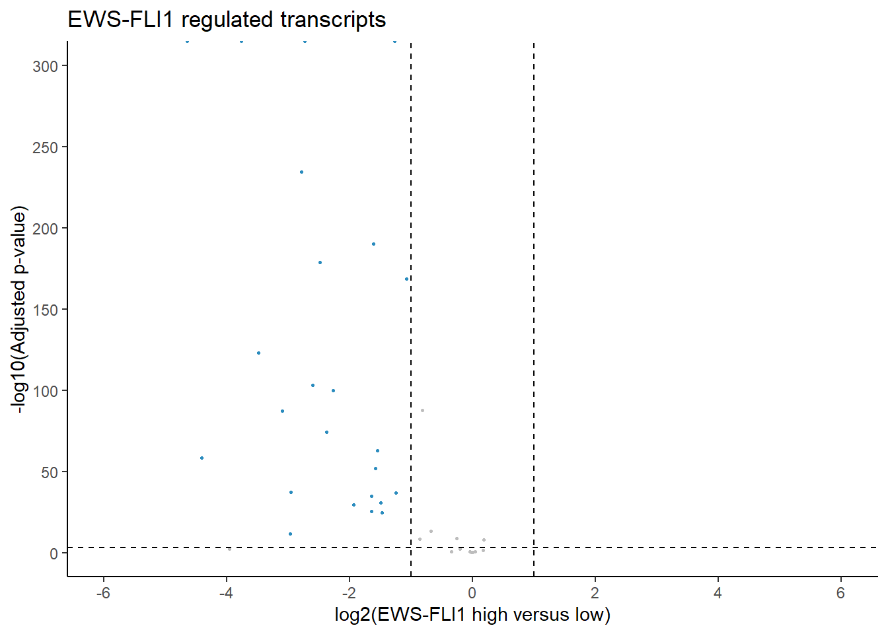

##########################################################################################
library('tidyverse')
library('ggplot2')
library('RColorBrewer')Immune candidates
Details
This document describes looking for a gene set in data related to EWS-FLI1 regulation.
Setting up the environment
These are packages you will need for this notebook. For exact versions used, please refer to the session info at the bottom of this notebook.
I want to set a base directory that we can use as a link to the directory where we will do most of the work. I use two directories here because the Workspace is what is pushed to GitHub and contains scripts and plot files, but the Repository is where more of the big data is stored that does not get pushed.
##########################################################################################
generalDatasets = 'C:/Users/chughes/Documents/bccrc/projectsRepository/generalDatasets'
baseWorkspace = 'C:/Users/chughes/Documents/bccrc/projectsWorkspace/sorensenLab/relatedToOthers'
baseRepository = 'C:/Users/chughes/Documents/bccrc/projectsRepository/sorensenLab/relatedToOthers'Data processing
Read in our A673 EWS-FLI1 data and look for the candidate gene set.
##########################################################################################
#read in the processed data
geneSet = tibble('symbol' = c('BST2','B2M','DDX58','DDX60','DTX3L','EIF2AK2','GBP1',
'HELZ2','HLA-A','HLA-B','HLA-C','IFI30','IFI35','IFI44L',
'MDA5','IFIT1','IFIT2','IFIT3','IFIT5','IRF9','ISG15','ISG20',
'ISG60','MX1','NMI','OAS1','OAS2','OAS3','PML','SAMD9','SAMHD1',
'STAT1','STAT2','STAT3','TAP1','TAP2','TAPBP','UBA7','UBE2L6',
'IRF3','IRF7','TBK','RIG1'))
##check for the genes in the data data
sole = readRDS('C:/Users/chughes/Documents/bccrc/projectsRepository/sorensenLab/relatedToEwsCrisprManuscript/defineCandidatesExpressionData/soleInducedEwsRnaSeq/datasetOutputs/dataset_deseq2_mscAndMpcDeData.rds') %>%
dplyr::select(symbol, msc_log2FoldChange, msc_padj, mpc_log2FoldChange, mpc_padj)
sorensen = readRDS('C:/Users/chughes/Documents/bccrc/projectsRepository/sorensenLab/relatedToEwsCrisprManuscript/defineCandidatesExpressionData/sorensenEwsA673RnaSeq/datasetOutputs/dataset_deseq2_day0-day7.rds') %>%
dplyr::select(symbol, log2FoldChange, padj) %>%
dplyr::rename(a673_log2FoldChange = log2FoldChange, a673_padj = padj)
#
geneSet = geneSet %>%
dplyr::left_join(sorensen) %>%
dplyr::left_join(sole)Joining, by = "symbol"
Joining, by = "symbol"##plot the data
geneSet$logPValue = -log10(geneSet$a673_padj)
geneSet$logPValueScaled = ifelse(geneSet$logPValue > 300, 300, geneSet$logPValue)
geneSet$pColors = ifelse(geneSet$a673_padj <= 0.001 & geneSet$a673_log2FoldChange >= 1, brewer.pal(4,'OrRd')[4],
ifelse(geneSet$a673_padj <= 0.001 & geneSet$a673_log2FoldChange <= -1, brewer.pal(4,'GnBu')[4], brewer.pal(3,'Greys')[2]))
#
ggplot(geneSet, aes(a673_log2FoldChange, -log10(a673_padj))) +
geom_point(size = 0.5, color = geneSet$pColors) +
labs(x = 'log2(EWS-FLI1 high versus low)', y = '-log10(Adjusted p-value)', title = 'EWS-FLI1 regulated transcripts') +
#geom_text_repel(label = rnaExp$pText, nudge_x = 0, nudge_y = 0, max.overlaps = 55000, size = 2, segment.size = 0.25) +
scale_x_continuous(limits = c(-6,6), breaks = seq(-20,20,2)) +
scale_y_continuous(limits = c(0,300), breaks = seq(0,500,50)) +
geom_vline(xintercept = c(-1,1), linetype = 'dashed') +
geom_hline(yintercept = -log10(0.001), linetype = 'dashed') +
theme_classic()Warning: Removed 6 rows containing missing values (`geom_point()`).
ggsave(paste(baseRepository, '/dataMining20230118_deepuEwsFli1ImmuneCandidates/scatter_a673ImmuneCandidates.pdf', sep = ''),
height = 2, width = 2, useDingbats = FALSE)Warning: Removed 6 rows containing missing values (`geom_point()`).##write this gene set to a file
saveRDS(geneSet, paste(baseRepository, '/dataMining20230118_deepuEwsFli1ImmuneCandidates/dataset_deseq2_candidatesPlusSole.rds', sep = ''))
write.table(geneSet, paste(baseRepository, '/dataMining20230118_deepuEwsFli1ImmuneCandidates/dataset_deseq2_candidatesPlusSole.tsv', sep = ''),
row.names = FALSE, col.names = TRUE, quote = FALSE, sep = '\t')